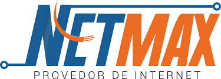

Olá, meu nome é Douglas e trabalho na NETMAX, uma empresa de telecomunicações que se destaca pela qualidade e inovação em seus serviços. Minha função como técnico geral me permite atuar em diversas áreas, tanto na instalação e manutenção de fibra óptica quanto na configuração de equipamentos.
Olá, meu nome é Douglas e trabalho na NETMAX, uma empresa de telecomunicações que se destaca pela qualidade e inovação em seus serviços. Minha função como técnico geral me permite atuar em diversas áreas, tanto na instalação e manutenção de fibra óptica quanto na configuração de equipamentos.
Estou constantemente em busca de me atualizar acerca das tendências do mercado e das tecnologias emergentes. Sou atraído por projetos práticos, onde posso colocar em prática o que aprendi e também aprender com os meus colegas. Ademais, aprecio compartilhar saberes e trocar pensamentos sobre soluções inovadoras para desafios cotidianos.
Creio que essa trajetória acadêmica está me preparando não apenas para me tornar um profissional de excelência, mas também para me tornar um solucionador de problemas, uma habilidade crucial no universo tecnológico.
Estou sempre em contato com tecnologias de ponta, como os dispositivos da Cisco e Mikrotik, que são fundamentais para garantir uma conexão estável e eficiente para nossos clientes. Além disso, meu trabalho com fibra óptica envolve desde a fusão de cabos até a resolução de problemas complexos, sempre buscando a melhor solução para as necessidades de cada cliente.
Na NETMAX, tenho a oportunidade de aprender continuamente e colaborar com uma equipe comprometida com a excelência. Estou orgulhoso de fazer parte de uma empresa que valoriza a inovação e o atendimento ao cliente.
Estou sempre em contato com tecnologias de ponta, como os dispositivos da Cisco e Mikrotik, que são fundamentais para garantir uma conexão estável e eficiente para nossos clientes. Além disso, meu trabalho com fibra óptica envolve desde a fusão de cabos até a resolução de problemas complexos, sempre buscando a melhor solução para as necessidades de cada cliente. Na NETMAX, tenho a oportunidade de aprender continuamente e colaborar com uma equipe comprometida com a excelência. Estou orgulhoso de fazer parte de uma empresa que valoriza a inovação e o atendimento ao cliente.